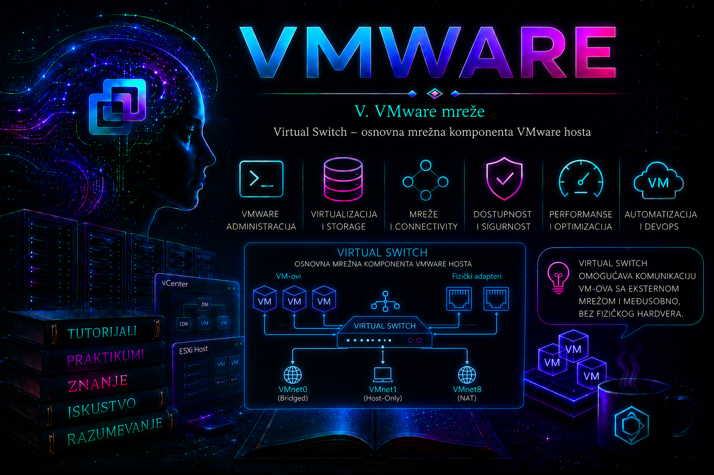

VMware

Virtual Switch, odnosno virtuelni mrežni switch, predstavlja osnovnu komponentu mrežne infrastrukture svakog ESXi hosta. Njegova uloga je da poveže virtuelne mrežne adaptere virtuelnih mašina, VMkernel adaptere ESXi hosta i fizičke mrežne adaptere servera. Bez virtuelnog switcha virtuelna mašina ne može da komunicira sa drugim virtuelnim mašinama, ESXi servisima niti sa fizičkom mrežom.
Virtuelni switch funkcioniše kao softverski Layer 2 mrežni uređaj unutar ESXi hipervizora. On prosleđuje Ethernet saobraćaj između svojih portova i, kada je povezan sa fizičkim mrežnim adapterom, omogućava izlazak saobraćaja prema fizičkom switchu i ostatku mrežne infrastrukture.
U VMware vSphere okruženju najčešće se koriste dve vrste virtuelnih switcheva:
- vSphere Standard Switch – VSS, koji se konfiguriše posebno na svakom ESXi hostu
- vSphere Distributed Switch – VDS, koji se centralno konfiguriše i upravlja kroz vCenter Server
Ova lekcija je prvenstveno posvećena standardnom virtuelnom switchu, jer je on najpogodniji za razumevanje osnovne VMware mrežne arhitekture i dostupan je i u jednostavnijim ESXi okruženjima. Distributed Switch predstavlja napredniji model namenjen većim i centralizovano upravljanim infrastrukturama.
Uloga virtuelnog switcha
Virtual Switch može da poveže tri osnovne vrste mrežnih elemenata:
- virtuelne mrežne kartice virtuelnih mašina
- VMkernel mrežne adaptere ESXi hosta
- fizičke mrežne adaptere ESXi servera
Virtuelni switch može da prosleđuje saobraćaj:
- između dve virtuelne mašine na istom ESXi hostu
- između virtuelne mašine i fizičke mreže
- između VMkernel adaptera i fizičke mreže
- između virtuelne mašine i VMkernel servisa, kada mrežna konfiguracija to dozvoljava
Ako se dve virtuelne mašine nalaze na istom ESXi hostu, priključene su na odgovarajuće port grupe istog vSwitch-a i pripadaju istoj Layer 2 mreži, njihov saobraćaj može ostati unutar ESXi hosta. U tom slučaju paketi ne moraju da prolaze kroz fizički mrežni adapter i fizički switch.
Ako odredište nije dostupno unutar lokalnog virtuelnog switcha, saobraćaj se šalje preko fizičkog uplinka prema fizičkoj mreži.
Osnovne komponente vSphere Standard Switcha
Standardni virtuelni switch sastoji se od nekoliko povezanih elemenata:
- vSwitch – softverski Layer 2 switch na ESXi hostu
- portovi – logičke priključne tačke za mrežne adaptere
- Port Group – grupa portova sa zajedničkim mrežnim pravilima
- uplink – fizički mrežni adapter povezan sa vSwitch-em
- vmnic – oznaka fizičkog mrežnog adaptera na ESXi hostu
- vNIC – virtuelna mrežna kartica virtuelne mašine
- VMkernel adapter – mrežni adapter koji koristi sam ESXi host
Tipična struktura izgleda ovako:
Virtuelna mašina
|
Virtuelni mrežni adapter
|
Port Group
|
vSphere Standard Switch
|
Fizički uplink – vmnic0
|
Fizički mrežni switch
|
Ostatak mreže
vSwitch nije isto što i fizički switch
Virtuelni switch obavlja deo funkcija fizičkog Ethernet switcha, ali postoji isključivo unutar ESXi hosta. Nema sopstvene fizičke portove, kablove ili zaseban operativni sistem. Njegovi portovi nastaju logički kada se povežu virtuelne mašine, VMkernel adapteri ili fizički uplinkovi.
Fizički switch povezuje servere, rutere, storage uređaje i druge fizičke komponente. Virtuelni switch povezuje virtuelne i VMkernel mrežne interfejse unutar jednog ESXi hosta, a sa fizičkim svetom komunicira preko jednog ili više vmnic uplinkova.
vSphere Standard Switch – lokalna konfiguracija
Konfiguracija standardnog switcha pripada konkretnom ESXi hostu. Ako klaster ima tri ESXi hosta i svaki treba da koristi istu mrežu, odgovarajući vSwitch i port grupe moraju biti pravilno konfigurisani na sva tri hosta.
Na primer, ako virtuelna mašina treba da se migrira sa hosta esxi01 na esxi02, ciljnom hostu mora biti dostupna odgovarajuća port grupa i fizička mrežna povezanost.
Standardni switch ne obezbeđuje automatsku centralnu sinhronizaciju konfiguracije između hostova. Administrator zato mora da vodi računa o doslednosti:
- naziva port grupa
- VLAN identifikatora
- MTU vrednosti
- uplink konfiguracije
- NIC teaming pravila
- bezbednosnih politika
U većim okruženjima ova potreba za doslednošću predstavlja jedan od razloga za korišćenje vSphere Distributed Switcha.
Podrazumevani vSwitch0
Tokom instalacije ESXi hosta najčešće se kreira standardni switch pod nazivom:
vSwitch0
Na njemu se obično nalaze:
- Management Network port grupa
- VMkernel adapter
vmk0 - jedan fizički uplink, najčešće
vmnic0
Tipična početna konfiguracija izgleda ovako:
vmk0
|
Management Network
|
vSwitch0
|
vmnic0
|
Fizički switch
Nazivi fizičkih adaptera i raspored mogu se razlikovati u zavisnosti od servera, instalacije i izabrane mrežne konfiguracije.
Fizički mrežni adapteri – vmnic
ESXi fizičke mrežne adaptere označava imenima:
vmnic0
vmnic1
vmnic2
vmnic3
Svaki vmnic predstavlja fizički port mrežne kartice servera. Jedan ili više ovih adaptera mogu biti pridruženi standardnom virtuelnom switchu kao uplinkovi.
Pregled fizičkih mrežnih adaptera:
esxcli network nic list
Primer izlaza:
Name PCI Device Driver Admin Status Link Status Speed Duplex
------ ------------ ------- ------------ ----------- ----- ------
vmnic0 0000:01:00.0 ntg3 Up Up 1000 Full
vmnic1 0000:01:00.1 ntg3 Up Up 1000 Full
vmnic2 0000:02:00.0 i40en Up Down 0 Half
Najvažnije kolone su:
- Driver – drajver koji ESXi koristi za adapter
- Admin Status – da li je adapter administrativno omogućen
- Link Status – da li postoji aktivna fizička veza
- Speed – dogovorena brzina veze
- Duplex – način slanja i prijema saobraćaja
Adapter može imati administrativni status Up, a link status Down. To znači da je interfejs omogućen na ESXi hostu, ali nema aktivnu fizičku vezu. Uzrok može biti nepovezan kabl, ugašen port fizičkog switcha, neispravan transceiver ili problem sa fizičkim adapterom.
Detaljna provera fizičkog adaptera
Detaljne informacije o određenom adapteru:
esxcli network nic get -n vmnic0
Statistika adaptera:
esxcli network nic stats get -n vmnic0
U statistici treba obratiti pažnju na:
- primljene i poslate pakete
- odbačene pakete
- greške prijema
- greške slanja
Povremeni mali broj grešaka nije dovoljan za zaključak da adapter nije ispravan. Važno je pratiti da li se brojači ubrzano povećavaju i uporediti ih sa statistikama odgovarajućeg porta na fizičkom switchu.
Uplink – veza prema fizičkoj mreži
Fizički adapter postaje uplink kada se pridruži virtuelnom switchu. Uplink prenosi saobraćaj između virtuelnog i fizičkog mrežnog okruženja.
Jedan vSwitch može imati:
- jedan fizički uplink
- više aktivnih uplinkova
- aktivne i rezervne uplinkove
- nijedan fizički uplink
Ako vSwitch nema fizički uplink, virtuelne mašine povezane na njega mogu međusobno da komuniciraju samo unutar istog ESXi hosta i odgovarajuće virtuelne mreže. Ne mogu da pristupe fizičkoj mreži niti virtuelnim mašinama na drugim hostovima.
Izolovani virtuelni switch
Standardni switch bez fizičkog uplinka može se koristiti za izolovana laboratorijska okruženja, testiranje firewall-a, zatvorene aplikacione mreže ili privremene interne komunikacione segmente.
Primer:
VM-App01
|
Internal-Lab Port Group
|
vSwitch-Lab
|
Nema fizičkog uplinka
|
VM-DB01
Obe VM mogu da komuniciraju ako su na istom hostu, istoj port grupi ili odgovarajućoj Layer 2 mreži, ali nemaju automatski pristup spoljašnjoj mreži.
Tok saobraćaja između dve VM na istom hostu
Pretpostavimo da se VM-App01 i VM-DB01 nalaze na istom ESXi hostu i povezane su na istu port grupu:
VM-App01
|
App-Network
|
vSwitch1
|
App-Network
|
VM-DB01
Saobraćaj između njih može ostati unutar virtuelnog switcha. Fizički uplink se ne koristi samo zato što postoji. Time se smanjuje nepotreban izlazak lokalnog saobraćaja prema fizičkoj mreži.
Tok saobraćaja između VM na različitim hostovima
Ako se virtuelne mašine nalaze na različitim ESXi hostovima, saobraćaj mora da napusti prvi host preko fizičkog uplinka, prođe kroz fizičku mrežu i uđe u drugi host:
VM-App01
|
vSwitch1 na esxi01
|
vmnic1
|
Fizički switch
|
vmnic1
|
vSwitch1 na esxi02
|
VM-DB01
Zato port grupe, VLAN konfiguracija i fizički switch portovi moraju biti usklađeni na oba hosta.
Pregled standardnih virtuelnih switcheva
Najčešće korišćena ESXCLI komanda je:
esxcli network vswitch standard list
Primer skraćenog izlaza:
vSwitch0
Name: vSwitch0
Class: etherswitch
Num Ports: 4352
Used Ports: 6
Configured Ports: 128
MTU: 1500
Uplinks: vmnic0
Izlaz prikazuje:
- naziv standardnog switcha
- broj dostupnih i korišćenih portova
- MTU vrednost
- pridružene fizičke uplinkove
Pregled samo jednog switcha:
esxcli network vswitch standard list -v vSwitch0
Kreiranje standardnog virtuelnog switcha
Novi standardni switch može se kreirati komandom:
esxcli network vswitch standard add \
--vswitch-name=vSwitch-Lab
Kraća forma:
esxcli network vswitch standard add -v vSwitch-Lab
Provera:
esxcli network vswitch standard list -v vSwitch-Lab
Novi switch nakon kreiranja nema automatski port grupu, VMkernel adapter niti fizički uplink. Te komponente dodaju se zasebno, u zavisnosti od njegove namene.
Dodavanje fizičkog uplinka
Dodavanje fizičkog adaptera vmnic1 na switch:
esxcli network vswitch standard uplink add \
--uplink-name=vmnic1 \
--vswitch-name=vSwitch-Lab
Kraća forma:
esxcli network vswitch standard uplink add \
-u vmnic1 \
-v vSwitch-Lab
Nakon izmene proveriti:
esxcli network vswitch standard list -v vSwitch-Lab
Pre dodavanja adaptera treba proveriti da li je već dodeljen drugom standardnom ili distribuiranom switchu.
Uklanjanje fizičkog uplinka
Uplink se uklanja komandom:
esxcli network vswitch standard uplink remove \
--uplink-name=vmnic1 \
--vswitch-name=vSwitch-Lab
Ova operacija može odmah prekinuti mrežnu povezanost VM-ova ili VMkernel servisa koji koriste taj switch.
Posebno je opasno ukloniti jedini aktivni uplink sa switcha koji prenosi management saobraćaj. Ako se administracija vrši preko SSH ili vSphere Client-a, administrator može izgubiti udaljeni pristup hostu.
Bezbednost mrežnih izmena
Pre promene uplinkova treba proveriti:
- da li se na switchu nalazi Management Network
- da li postoji drugi aktivni uplink
- da li je fizički switch port pravilno konfigurisan
- da li postoji pristup lokalnoj konzoli ili iLO, iDRAC odnosno IPMI interfejsu
- da li se promena izvodi u odobrenom terminu održavanja
- da li postoji dokumentovan postupak povratka
Mrežne izmene na udaljenom ESXi hostu nikada ne treba izvoditi bez procene mogućnosti gubitka management veze.
MTU – maksimalna veličina Ethernet okvira
MTU određuje najveću veličinu paketa koji mrežna komponenta može da prenese bez fragmentacije. Standardna Ethernet MTU vrednost najčešće je:
1500
Za određene storage, vMotion ili druge mreže mogu se koristiti jumbo frame vrednosti, najčešće:
9000
Promena MTU vrednosti standardnog switcha:
esxcli network vswitch standard set \
--mtu=9000 \
--vswitch-name=vSwitch-Storage
Provera:
esxcli network vswitch standard list -v vSwitch-Storage
Jumbo frame konfiguracija mora biti dosledna kroz čitavu mrežnu putanju:
- VMkernel adapter
- virtuelni switch
- fizički mrežni adapter
- fizički switch portovi
- međusobni switch linkovi
- odredišni uređaj
Promena MTU vrednosti samo na virtuelnom switchu nije dovoljna. Nedosledan MTU može izazvati gubitak paketa, probleme sa storage vezom ili situacije u kojima mali paketi prolaze, a veći ne prolaze.
Testiranje MTU konfiguracije
Za test VMkernel mreže koristi se vmkping. Kod MTU 9000 može se testirati paket odgovarajuće veličine bez fragmentacije:
vmkping -I vmk1 -d -s 8972 192.168.50.12
Opcije znače:
-I vmk1– koristi određeni VMkernel adapter-d– ne dozvoljava fragmentaciju-s 8972– veličina ICMP podataka za Ethernet MTU 9000
Ako standardni ping prolazi, a jumbo test ne prolazi, potrebno je proveriti MTU duž cele putanje.
Port Group i vSwitch
Virtuelna mašina se najčešće ne povezuje direktno na vSwitch, već na port grupu koja pripada tom switchu.
Port grupa određuje zajedničke mrežne parametre, kao što su:
- naziv mreže
- VLAN ID
- teaming i failover politika
- bezbednosna pravila
- traffic shaping pravila
Detaljna administracija port grupa obrađuje se u narednoj lekciji. Za rad vSwitch-a je važno razumeti da port grupa predstavlja logičku pristupnu tačku preko koje se VM ili VMkernel adapter priključuju na switch.
Pregled port grupa standardnih switcheva
esxcli network vswitch standard portgroup list
Primer:
Name Virtual Switch Active Clients VLAN ID
------------------ -------------- -------------- -------
Management Network vSwitch0 1 0
VM Network vSwitch0 4 0
Lab-Network vSwitch-Lab 2 120
Na osnovu ovog izlaza može se utvrditi:
- koja port grupa pripada kom switchu
- koliko aktivnih klijenata koristi port grupu
- koji VLAN ID je konfigurisan
Kreiranje port grupe radi testiranja switcha
Port grupa se može dodati komandom:
esxcli network vswitch standard portgroup add \
--portgroup-name=Lab-Network \
--vswitch-name=vSwitch-Lab
Provera:
esxcli network vswitch standard portgroup list
U ovoj fazi port grupa može koristiti podrazumevani VLAN ID 0, odnosno neoznačeni saobraćaj. VLAN konfiguracija detaljno se obrađuje u posebnoj lekciji.
NIC teaming
Jedan vSwitch može koristiti više fizičkih uplinkova. Time se mogu ostvariti:
- redundansa mrežne veze
- failover kada jedan fizički adapter ili link otkaže
- raspodela saobraćaja prema izabranoj load-balancing politici
Primer:
vSwitch-Production
|
+-- vmnic0 – Active
|
+-- vmnic1 – Active
ili:
vSwitch-Management
|
+-- vmnic0 – Active
|
+-- vmnic1 – Standby
Pregled failover politike standardnog switcha:
esxcli network vswitch standard policy failover get \
--vswitch-name=vSwitch0
Pregled politike određene port grupe:
esxcli network vswitch standard policy failover get \
--portgroup-name="Management Network"
Port grupa može naslediti politiku sa vSwitch-a ili koristiti sopstvenu override konfiguraciju.
Osnovne load-balancing politike
Standardni switch može koristiti više politika za izbor uplinka. Najčešće se sreću:
- Route based on originating virtual port
- Route based on source MAC hash
- Route based on IP hash
- Use explicit failover order
Uobičajena podrazumevana politika standardnog switcha jeste raspodela na osnovu početnog virtuelnog porta. VM dobija uplink koji koristi dok postoji njena veza sa virtuelnim portom, osim ako dođe do failover događaja.
IP hash politika zahteva odgovarajuću konfiguraciju agregacije linkova na fizičkom switchu. Ne treba je uključivati bez usklađivanja sa fizičkom mrežnom infrastrukturom.
Failover detekcija
ESXi može da detektuje neuspeh uplinka pomoću:
- Link Status Only
- Beacon Probing
Link Status Only prepoznaje fizički gubitak linka koji mrežna kartica može da prijavi. Ne mora prepoznati svaki problem dalje u fizičkoj mreži.
Beacon Probing šalje beacon pakete kroz više uplinkova kako bi pokušao da utvrdi šire probleme u mrežnoj putanji. Koristi se samo u odgovarajuće projektovanim topologijama i nije zamena za pravilno dizajniranu fizičku redundansu.
Bezbednosne politike vSwitch-a
Standardni switch i njegove port grupe sadrže tri važne bezbednosne politike:
- Promiscuous Mode
- MAC Address Changes
- Forged Transmits
Promiscuous Mode određuje da li priključeni adapter može da prima saobraćaj koji nije namenjen njegovoj MAC adresi. Uobičajeno treba da ostane odbijen, osim kada postoji opravdan razlog kao što su određeni sistemi za analizu saobraćaja ili virtuelni mrežni uređaji.
MAC Address Changes određuje ponašanje kada gost promeni efektivnu MAC adresu svog adaptera.
Forged Transmits određuje da li ESXi prihvata izlazne okvire čija izvorna MAC adresa ne odgovara očekivanoj adresi virtuelnog adaptera.
Pregled bezbednosne politike vSwitch-a:
esxcli network vswitch standard policy security get \
--vswitch-name=vSwitch0
Pregled politike port grupe:
esxcli network vswitch standard policy security get \
--portgroup-name="VM Network"
Ove politike ne treba menjati samo zato što neka aplikacija ne radi. Pre dozvoljavanja promiscuous režima ili MAC odstupanja mora se razumeti mrežna arhitektura aplikacije i bezbednosni rizik.
CDP – otkrivanje fizičkog switcha
Ako fizička mrežna oprema podržava Cisco Discovery Protocol, ESXi može da sluša ili oglašava CDP informacije.
Pregled trenutnog podešavanja:
esxcli network vswitch standard list -v vSwitch0
Podešavanje CDP režima:
esxcli network vswitch standard set \
--cdp-status=listen \
--vswitch-name=vSwitch0
Moguće vrednosti uključuju:
down
listen
advertise
both
CDP ili slični protokoli mogu pomoći da se utvrdi na koji je fizički switch i port povezan određeni ESXi uplink. Njihova upotreba zavisi od mrežne opreme i bezbednosne politike organizacije.
Pregled mrežne konfiguracije pomoću esxcfg-vswitch
Na ESXi hostovima može se sresti i starija komanda:
esxcfg-vswitch -l
Ona prikazuje standardne switcheve, port grupe i uplinkove u sažetom obliku. Za novu automatizaciju i administraciju prednost treba dati podržanom esxcli okviru, ali je esxcfg-vswitch -l i dalje koristan kao brza dijagnostička komanda u određenim okruženjima.
PowerCLI pregled virtuelnih switcheva
Povezivanje na vCenter:
Connect-VIServer vcsa.lab.local
Pregled svih standardnih switcheva:
Get-VMHost |
Get-VirtualSwitch -Standard
Pregled switcheva na određenom hostu:
Get-VMHost "esxi01.lab.local" |
Get-VirtualSwitch -Standard
Prikaz osnovnih parametara:
Get-VMHost "esxi01.lab.local" |
Get-VirtualSwitch -Standard |
Select-Object Name, Mtu, Nic, NumPorts, NumPortsAvailable
Kreiranje vSwitch-a pomoću PowerCLI-ja
Kreiranje standardnog switcha:
$vmhost = Get-VMHost "esxi01.lab.local"
New-VirtualSwitch `
-VMHost $vmhost `
-Name "vSwitch-Lab" `
-Mtu 1500
Kreiranje switcha i povezivanje fizičkog adaptera:
$vmhost = Get-VMHost "esxi01.lab.local"
$vmnic = Get-VMHostNetworkAdapter `
-VMHost $vmhost `
-Physical `
-Name "vmnic1"
New-VirtualSwitch `
-VMHost $vmhost `
-Name "vSwitch-Lab" `
-Nic $vmnic `
-Mtu 1500
Pre izvršavanja treba proveriti da vmnic1 nije uplink drugog switcha i da njegovo premeštanje neće prekinuti aktivan saobraćaj.
Dodavanje fizičkog adaptera pomoću PowerCLI-ja
$vmhost = Get-VMHost "esxi01.lab.local"
$vswitch = Get-VirtualSwitch `
-VMHost $vmhost `
-Name "vSwitch-Lab"
$vmnic = Get-VMHostNetworkAdapter `
-VMHost $vmhost `
-Physical `
-Name "vmnic1"
Add-VirtualSwitchPhysicalNetworkAdapter `
-VirtualSwitch $vswitch `
-VMHostPhysicalNic $vmnic `
-Confirm:$false
Kreiranje port grupe pomoću PowerCLI-ja
$vmhost = Get-VMHost "esxi01.lab.local"
$vswitch = Get-VirtualSwitch `
-VMHost $vmhost `
-Name "vSwitch-Lab"
New-VirtualPortGroup `
-VirtualSwitch $vswitch `
-Name "Lab-Network" `
-VLanId 0
Port grupa se u ovom primeru kreira bez VLAN označavanja. VLAN ID i njegova primena detaljno se obrađuju u lekciji o VLAN mrežama.
Promena MTU vrednosti pomoću PowerCLI-ja
Get-VMHost "esxi01.lab.local" |
Get-VirtualSwitch -Name "vSwitch-Lab" |
Set-VirtualSwitch -Mtu 9000
Nakon izmene treba proveriti rezultat:
Get-VMHost "esxi01.lab.local" |
Get-VirtualSwitch -Name "vSwitch-Lab" |
Select-Object Name, Mtu, Nic
Uklanjanje standardnog switcha
ESXCLI komanda:
esxcli network vswitch standard remove \
--vswitch-name=vSwitch-Lab
PowerCLI:
Get-VMHost "esxi01.lab.local" |
Get-VirtualSwitch -Name "vSwitch-Lab" |
Remove-VirtualSwitch -Confirm:$false
Switch se ne uklanja dok na njemu postoje elementi ili aktivne veze koje to sprečavaju. Pre uklanjanja treba proveriti:
- da li port grupe koriste virtuelne mašine
- da li postoji VMkernel adapter
- da li switch prenosi management saobraćaj
- da li je neki fizički uplink potreban drugoj mreži
Poređenje Standard Switcha i Distributed Switcha
| Osobina | Standard Switch | Distributed Switch |
|---|---|---|
| Upravljanje | Posebno na svakom ESXi hostu | Centralno kroz vCenter |
| Doslednost konfiguracije | Administrator je održava na svim hostovima | Konfiguracija se distribuira hostovima |
| Pogodnost | Manja i jednostavnija okruženja | Veća i složenija okruženja |
| Napredne funkcije | Osnovni skup funkcionalnosti | Naprednije praćenje i upravljanje saobraćajem |
| Zavisnost od vCenter-a za konfiguraciju | Nije neophodna | Centralna konfiguracija zavisi od vCenter-a |
Standardni switch nije samo rešenje za mala okruženja. Često se koristi i kao rezervna, bootstrap ili management mrežna komponenta, naročito kada administrator želi osnovnu mrežnu povezanost koja nije potpuno zavisna od distribuirane konfiguracije.
Arhitektura vSphere Distributed Switcha
vSphere Distributed Switch, skraćeno VDS ili vDS, predstavlja jedan logički switch na nivou vCenter inventara čija se konfiguracija primenjuje na više pridruženih ESXi hostova. Kontrolna ravan nalazi se u vCenter Serveru: tu administrator kreira switch, distributed port grupe, uplink grupe i politike. Data plane, odnosno stvarno prosleđivanje Ethernet okvira, izvršava se lokalno u kernelu svakog ESXi hosta. Zbog toga već povezane virtuelne mašine ne ostaju bez mreže samo zato što je vCenter privremeno nedostupan; bez vCenter-a su, međutim, centralne izmene, nadzor i većina operacija upravljanja ograničeni.
Kada se host doda na VDS, njegov fizički adapter vmnic mapira se na logički dvUplink. Virtuelne mrežne kartice i VMkernel adapteri povezuju se na distributed port group, a pojedinačna veza koristi distributed virtual port. Konfiguracija se čuva u vCenter bazi i distribuira hostovima; host zadržava lokalno stanje potrebno da data plane nastavi rad. Ova podela kontrolne i data ravni važna je pri proceni posledica otkaza vCenter-a.
vCenter Server – kontrolna ravan VDS-a
|
+-- vSphere Distributed Switch
+-- Distributed Port Group: DVPG-Production
+-- Distributed Port Group: DVPG-Management
+-- Uplink Port Group: dvUplink1, dvUplink2
|
+--------------+--------------+
| |
ESXi host 1 ESXi host 2
vmnic0 -> dvUplink1 vmnic0 -> dvUplink1
VM/VMkernel portovi VM/VMkernel portovi
Verzija, licenca i funkcionalni okvir VDS-a
VSS je deo osnovne ESXi mrežne funkcionalnosti, dok dostupnost VDS-a zavisi od važeće vSphere pretplate ili licence i konkretnog Broadcom programskog paketa. Pošto se komercijalno pakovanje menjalo, naziv istorijskog izdanja, kao što je Enterprise Plus, nije dovoljan dokaz aktuelnog prava korišćenja. Pre produkcionog dizajna treba proveriti Broadcom Product Guide, entitlement u Support Portalu i interoperabilnost tačne verzije vCenter-a i ESXi hostova.
Svaki VDS ima sopstvenu verziju kompatibilnosti. Ona određuje skup mogućnosti koje switch može da koristi i ne sme biti novija od najstarijeg ESXi hosta koji treba da mu pristupi. Nadogradnja verzije VDS-a planira se tek nakon provere svih hostova; nije obična kozmetička promena i povratak na stariju verziju nije standardni rollback. Pre nadogradnje treba izvesti konfiguraciju switcha, proveriti podržane host verzije i dokumentovati recovery putanju.
| Mogućnost | VSS | VDS | Administratorska posledica |
|---|---|---|---|
| Opseg konfiguracije | Jedan host | Više hostova preko vCenter-a | VDS smanjuje konfiguracioni drift |
| Port monitoring | Osnovni brojači | NetFlow, port mirroring i detaljniji nadzor, u zavisnosti od verzije | Bolja vidljivost, ali i potreba za kontrolom pristupa snimljenom saobraćaju |
| Otkrivanje suseda | CDP u podržanim režimima | CDP ili LLDP, u zavisnosti od konfiguracije | Olakšava dokazivanje fizičke topologije |
| Agregacija linkova | IP hash uz statički EtherChannel | LACP uz odgovarajući LAG i fizički switch | Obe strane moraju biti usklađene; pogrešna postavka izaziva parcijalni gubitak paketa |
| Kontrola resursa | Ograničen skup shaping i teaming pravila | Network I/O Control i napredne politike | Omogućava prioritizaciju, ali zahteva dokumentovane shares, reservation i limit vrednosti |
| Health Check | Nema ekvivalentan centralni VDS test | Provera VLAN/MTU i teaming konfiguracije | Koristiti privremeno i ciljano; testni saobraćaj i bezbednosna politika moraju biti odobreni |
Dizajn uplinkova, redundansa i odnos sa fizičkim switch-em
Dva fizička adaptera ne znače automatski redundansu. Potrebno je dokazati da vode do odgovarajućih fizičkih switch-eva, da su VLAN trunk, MTU, brzina i flow-control odluke usklađene, da teaming politika odgovara fizičkoj konfiguraciji i da kvar jednog puta zaista preuzima drugi. Kod nezavisnih fizičkih switch-eva najčešće se koriste standardne active/standby ili load-based politike bez agregacije. LACP se uvodi samo kada su oba fizička uređaja deo podržanog zajedničkog logičkog sistema i kada je VDS LAG konfigurisan identično na obe strane.
Politika Route based on physical NIC load dostupna je na VDS-u i može dinamički premestiti port kada je uplink opterećen. Ona ne sabira propusni opseg za jedan tok i nije zamena za kapacitetno planiranje. Network I/O Control raspodeljuje propusni opseg između tipova sistemskog saobraćaja kada postoji contention; rezervacije ne treba postaviti tako da zbir ugrozi neklasifikovani ili drugi kritični saobraćaj.
Bezbednosne i operativne politike na distribuiranom switchu
Politike Promiscuous mode, MAC address changes i Forged transmits podrazumevano treba da ostanu restriktivne, osim kada dokumentovan workload zahteva drugačije ponašanje. Promiscuous mode omogućava prijem okvira koji nisu namenjeni MAC adresi adaptera i povećava mogućnost prisluškivanja. MAC address changes kontroliše prijem nakon promene efektivne MAC adrese, dok Forged transmits proverava izvornu MAC adresu odlaznog okvira. Izuzetak se primenjuje na najužem mogućem opsegu, uz vlasnika, rok važenja i audit dokaz.
Port mirroring i NetFlow mogu biti dragoceni u incidentu, ali kopirani paketi i flow zapisi mogu sadržati poverljive podatke. Destinacija, period čuvanja i administratorske privilegije moraju biti kontrolisani. Private VLAN, blokiranje portova i override na pojedinačnom portu koriste se samo uz jasno razumevanje nasleđivanja politika; nekontrolisani override otežava audit i stvara konfiguracioni drift unutar samog VDS-a.
Backup, rollback i oporavak distribuirane mreže
Pre značajne izmene VDS-a treba izvesti konfiguraciju switcha ili konkretne distributed port grupe. Export nije backup celog vCenter-a, ali čuva mrežne postavke pogodne za restore ili kreiranje novog objekta. Za potpun oporavak kontrolne ravni i inventara potreban je podržan file-based backup vCenter Server Appliance-a. Konfiguracija VSS-a pripada host konfiguraciji i obuhvata se odgovarajućim ESXi host configuration backup postupkom.
vSphere Network Rollback može automatski vratiti poslednju validnu konfiguraciju kada izmena prekine management povezivost. To je zaštitni mehanizam, a ne razlog da se promena izvodi bez out-of-band pristupa. U vSphere 7.0 i novijim izdanjima određene greške VDS konfiguracije mogu se korigovati direktnim povezivanjem na host i kroz DCUI recovery opcije. Pre migracije management VMkernel adaptera administrator mora imati iLO/iDRAC/KVM pristup, zabeleženu prethodnu VLAN/IP/uplink konfiguraciju i jasan postupak povratka na VSS.
# READ-ONLY: inventar distribuiranih switcheva i port grupa
Get-VDSwitch | Select-Object Name, Version, Mtu, NumUplinkPorts
Get-VDPortgroup | Select-Object Name, VDSwitch, VLanConfiguration
# STATE-CHANGING: izvoz konfiguracije pre promene
Get-VDSwitch -Name 'DSwitch-Production' |
Export-VDSwitch -Destination 'C:\ChangeRecords\DSwitch-Production-backup.zip'
Prve dve komande samo čitaju stanje. Export-VDSwitch ne menja mrežni data plane, ali zapisuje datoteku koja mora biti zaštićena jer otkriva strukturu mreže. Tačan naziv cmdlet-a i parametre treba proveriti u instaliranoj verziji VCF PowerCLI-ja. Uspeh se potvrđuje postojanjem čitljive ZIP datoteke i zapisom njenog hash-a u change evidenciji.
Bezbedna migracija sa VSS-a na VDS
- Pre-check: potvrditi licencu, kompatibilnost VDS verzije, zdravlje vCenter-a i hosta, fizički trunk/VLAN/MTU, slobodan ili redundantni uplink, pristup fizičkoj konzoli i aktuelan backup.
- Kreirati VDS i port grupe: nazivi nisu dokaz iste mreže; proveriti VLAN, MTU, teaming, security i NIOC politike.
- Dodavati hostove kontrolisano: prvo jedan pilot-host bez kritičnog workload-a. Kada je moguće, migrirati jedan vmnic, validirati putanju, pa tek zatim drugi.
- Migrirati VM mreže: grupisati ih po mreži, proveriti connected stanje, IP dostupnost, aplikativni test i događaje.
- Migrirati VMkernel adaptere poslednje i oprezno: management, vMotion, vSAN i IP storage imaju različite testove. Ne pretpostavljati da uspešan management ping potvrđuje ostale TCP/IP stack-ove.
- Post-check: testirati svaki servis sa odgovarajućim source VMkernel adapterom, izvršiti kontrolisani failover uplinka, proveriti alarme i sačuvati novu baznu liniju.
Rollback znači povratak VMkernel adaptera i VM mreža na unapred pripremljene VSS port grupe, vraćanje prvobitnog vmnic mapiranja i potvrdu management povezanosti. U produkciji se ne uklanja stari VSS dok se ne završe post-check, period posmatranja i odobrenje promene.
Osnovna dijagnostika vSwitch-a
Kada VM ili VMkernel servis nema mrežnu konekciju, dijagnostika virtuelnog switcha počinje sledećim komandama:
esxcli network vswitch standard list
esxcli network vswitch standard portgroup list
esxcli network nic list
esxcli network ip interface list
Redosled provere:
- Da li postoji očekivani vSwitch?
- Da li port grupa pripada odgovarajućem switchu?
- Da li je očekivani fizički adapter pridružen switchu?
- Da li je link fizičkog adaptera u stanju
Up? - Da li su brzina i duplex očekivani?
- Da li se povećavaju brojači grešaka ili odbačenih paketa?
- Da li fizički switch port koristi odgovarajuću VLAN konfiguraciju?
- Da li je MTU dosledan kroz celu putanju?
Provera koji uplink koristi određeni switch
esxcli network vswitch standard list -v vSwitch0
Ako izlaz prikazuje:
Uplinks: vmnic0
treba zatim proveriti stanje tog adaptera:
esxcli network nic get -n vmnic0
esxcli network nic stats get -n vmnic0
Ako je link Down, problem se verovatno nalazi na fizičkom sloju ili fizičkom switch portu. Ako je link Up, nastavlja se provera port grupe, VLAN-a, teaming politike i IP konfiguracije.
Pregled detaljne mrežne topologije
Komanda:
esxcli network vm list
prikazuje aktivne virtuelne mašine i njihove mrežne World ID vrednosti.
Detalji mrežnih portova određene VM mogu se prikazati komandom:
esxcli network vm port list -w <World-ID>
Izlaz može pomoći da se utvrdi:
- port ID
- ime vSwitch-a
- port grupa
- MAC adresa
- uplink koji se koristi
Ovo je korisno kada administrator mora da poveže određenu virtuelnu mrežnu karticu sa konkretnim portom i uplinkom na ESXi hostu.
Praćenje mrežnih performansi pomoću esxtop-a
Pokretanje alata:
esxtop
Pritiskom na:
n
otvara se mrežni prikaz.
Važni pokazatelji su:
- PORT-ID – identifikator virtuelnog porta
- UPLINK – fizički adapter koji prenosi saobraćaj
- MbRX/s – dolazni saobraćaj
- MbTX/s – odlazni saobraćaj
- %DRPRX – procenat odbačenih dolaznih paketa
- %DRPTX – procenat odbačenih odlaznih paketa
Kontinuirano povećanje drop vrednosti zahteva proveru opterećenja, drajvera, fizičkog adaptera, fizičkog switch porta i mrežne putanje. Jedan kratkotrajan skok nije dovoljan za zaključak da postoji trajan kvar.
Dijagnostika od simptoma do capture tačke
Pre promene konfiguracije treba zabeležiti simptom, pogođene VM-ove ili VMkernel servise, hostove, smer saobraćaja, vreme nastanka i poslednju poznatu promenu. Ako su pogođene samo VM na jednom hostu, hipoteza se usmerava ka lokalnom portu, uplinku ili host konfiguraciji; ako su pogođeni svi hostovi u jednom VLAN-u, verovatniji su distribuirana politika ili fizička mreža. Link Up dokazuje samo fizičku vezu, ne i ispravan VLAN, MTU ili povratnu putanju.
# READ-ONLY; izvršava root kroz ESXi Shell/SSH u odobrenom periodu
net-stats -l
esxcli network nic list
esxcli network nic stats get -n vmnic0
esxcli network ip interface list
esxcli network ip route ipv4 list
net-stats -l povezuje VM/VMkernel interfejs sa portom i portset-om. Nakon identifikacije odgovarajućeg PortNum-a, pktcap-uw može da dokaže da li okvir postoji na virtuelnom portu i da li stiže do uplinka. Capture se izvodi kratko, uz uzak filter i odobreno mesto za PCAP datoteku; bez filtera može opteretiti host, potrošiti prostor i prikupiti poverljiv sadržaj.
# Dijagnostički capture; zameniti vrednosti stvarnim portom i uplinkom
pktcap-uw --switchport 12345678 --capture VnicTx,VnicRx \
--count 100 -o /vmfs/volumes/Datastore-Lab/vnic-test.pcap
pktcap-uw --uplink vmnic0 \
--capture UplinkSndKernel,UplinkRcvKernel \
--count 100 -o /vmfs/volumes/Datastore-Lab/uplink-test.pcap
Ako se zahtev vidi na VnicTx, ali ne i na UplinkSndKernel, istražuju se virtual port, teaming, VLAN i host datapath. Ako zahtev napušta uplink, a odgovor se ne pojavljuje na UplinkRcvKernel, istraga prelazi na fizički switch, gateway, firewall ili udaljeni sistem. Ako odgovor stiže na uplink, ali ne dolazi do VnicRx, proveravaju se VLAN/port mapiranje, sigurnosna politika i stanje virtuelne kartice. PCAP datoteke se nakon analize bezbedno uklanjaju u skladu sa politikom čuvanja dokaza.
Za korelaciju se u vSphere Client-u proveravaju Tasks and Events, host i VDS alarmi i vreme poslednje rekonfiguracije. Na ESXi hostu su naročito relevantni /var/log/vmkernel.log za drajvere, link, uplink i kernel datapath, /var/log/hostd.log za host operacije i /var/log/vobd.log za VOB događaje i link-state promene. Na vCenter Server Appliance-u vpxd.log pomaže pri analizi distribuiranih konfiguracionih zadataka. Log se čita za isti vremenski prozor i koreliše sa task ID-jem, hostom, vmnic-om i vCenter događajem; izdvojena poruka bez konteksta nije dokaz osnovnog uzroka.
# READ-ONLY primeri; prilagoditi vremenski prozor i identifikatore
grep -Ei 'vmnic0|link.*(up|down)|uplink' /var/log/vmkernel.log | tail -n 100
grep -Ei 'network| dvs|dvport|rollback' /var/log/hostd.log | tail -n 100
Praktikum: inventar i bezbedni pre-check postojećeg VDS-a
Cilj vežbe je da se bez izmene stanja dokumentuju VDS, distributed port grupe, pridruženi hostovi, uplinkovi, MTU i VM/VMkernel veze. Vežba zahteva read-only pristup vCenter-u i radnu stanicu sa aktuelnim VCF PowerCLI modulima. Rizik je nizak jer su komande read-only; izlaz ipak može sadržati osetljivu topologiju i čuva se u kontrolisanom direktorijumu.
Connect-VIServer 'vcsa.lab.local'
$vds = Get-VDSwitch -Name 'DSwitch-Lab'
$vds | Format-List Name, Version, Mtu, NumUplinkPorts
$vds | Get-VDPortgroup |
Select-Object Name, VDSwitch, NumPorts, PortBinding,
VLanConfiguration
Get-VMHost | ForEach-Object {
$hostObject = $_
Get-VMHostNetworkAdapter -VMHost $hostObject -Physical |
Select-Object @{N='VMHost';E={$hostObject.Name}}, Name,
LinkSpeed, Mac, PciId
}
Get-VM | Get-NetworkAdapter |
Select-Object Parent, Name, NetworkName, MacAddress,
ConnectionState
Očekivani rezultat je inventar u kome je moguće dokazati da svi planirani hostovi vide VDS, da MTU odgovara dizajnu, da port grupe imaju očekivane politike i da nema VM adaptera vezanih za neočekivanu mrežu. Ako neki objekat nedostaje, ne kreira se automatski: nalaz se prvo poredi sa dizajnom i change evidencijom. Kriterijum završetka je sačuvan izveštaj, evidentirane razlike i potvrda da nijedna state-changing komanda nije izvršena.
Praktikum: simulacija prekida uplinka i dokaz failover-a
Vežba je namenjena isključivo laboratoriji ili odobrenom maintenance prozoru. Topologija mora imati dva stvarno nezavisna uplinka, testnu VM i konzolni pristup hostu. Cilj nije samo da ping nastavi rad, već da se dokaže promena aktivnog uplinka i odsustvo trajnog gubitka aplikativne sesije. Bez fizičke konzole i potvrđene redundanse test se ne izvodi.
- Pokrenuti kontinuirani ping i jednostavan aplikativni test iz kontrolisane tačke, a u
esxtopmrežnom prikazu zabeležiti trenutniUPLINK. - Sačuvati brojače oba vmnic-a i proveriti da oba linka imaju očekivanu brzinu.
- Simulirati kvar bez vađenja kabla tako što ovlašćeni mrežni administrator privremeno administrativno isključi tačno dokumentovan laboratorijski fizički port. To je povratna i proverljiva promena.
- Posmatrati vreme prekida, novi uplink, vCenter alarm i
vmkernel.log. Ako saobraćaj ne pređe na drugi put, odmah vratiti fizički port i obustaviti test. - Vratiti port, potvrditi da su oba linka
Up, da teaming politika odgovara početnom stanju i da nema rastućih drop/error brojača.
Kriterijum uspeha je dokumentovan failover u okviru prihvatljivog prekida, uspešan povratak redundanse i korelacija testa sa događajem i logom. Ako link status ne otkrije kvar koji postoji izvan neposrednog fizičkog linka, treba razmotriti beacon probing samo u dizajnu koji ga podržava i razume njegove posledice; nasumično uključivanje beacon probing-a nije korektivna mera.
Praktikum: kreiranje izolovanog standardnog switcha
Cilj vežbe je da se kreira standardni switch bez fizičkog uplinka i port grupa za komunikaciju dve testne virtuelne mašine na istom ESXi hostu.
Korak 1 – pregled postojeće konfiguracije
esxcli network vswitch standard list
esxcli network vswitch standard portgroup list
Pre svake izmene treba sačuvati postojeće stanje ili bar zabeležiti postojeće switcheve, port grupe, MTU vrednosti i uplinkove.
Korak 2 – kreiranje vSwitch-a
esxcli network vswitch standard add \
--vswitch-name=vSwitch-Isolated
Korak 3 – kreiranje port grupe
esxcli network vswitch standard portgroup add \
--portgroup-name=Isolated-Network \
--vswitch-name=vSwitch-Isolated
Korak 4 – provera rezultata
esxcli network vswitch standard list -v vSwitch-Isolated
esxcli network vswitch standard portgroup list
Očekivano stanje:
- postoji
vSwitch-Isolated - na njemu postoji port grupa
Isolated-Network - switch nema fizički uplink
Korak 5 – povezivanje testnih VM-ova
U vSphere Client-u mrežne adaptere dve testne virtuelne mašine povezati na:
Isolated-Network
Virtuelnim mašinama dodeliti statičke adrese iz iste privatne mreže, na primer:
VM-Lab01: 192.168.200.10/24
VM-Lab02: 192.168.200.20/24
Gateway nije potreban za komunikaciju unutar iste podmreže.
Korak 6 – test komunikacije
Sa prve VM:
ping 192.168.200.20
Sa druge VM:
ping 192.168.200.10
Ako ping ne prolazi, proveriti:
- da li su obe VM na istom ESXi hostu
- da li su povezane na istu port grupu
- da li su mrežni adapteri u stanju Connected
- da li koriste istu masku mreže
- da li lokalni firewall blokira ICMP
Korak 7 – potvrda izolacije
Pokušati ping prema fizičkom gateway-u organizacije. Test ne bi trebalo da uspe samo preko ovog switcha, jer vSwitch-Isolated nema fizički uplink.
Korak 8 – uklanjanje laboratorijske konfiguracije
Najpre mrežne adaptere VM-ova premestiti na drugu port grupu ili isključiti testne VM-ove.
Uklanjanje port grupe:
esxcli network vswitch standard portgroup remove \
--portgroup-name=Isolated-Network
Uklanjanje switcha:
esxcli network vswitch standard remove \
--vswitch-name=vSwitch-Isolated
Završna provera:
esxcli network vswitch standard list
esxcli network vswitch standard portgroup list
Praktikum: kreiranje switcha sa fizičkim uplinkom
Ovu vežbu treba izvoditi samo ako postoji slobodan fizički adapter i pristup fizičkom switchu.
Korak 1 – pronaći slobodan fizički adapter
esxcli network nic list
esxcli network vswitch standard list
Adapter nije slobodan samo zato što nema aktivan link. Mora se proveriti da nije član drugog standardnog ili distribuiranog switcha.
Korak 2 – kreirati switch
esxcli network vswitch standard add \
--vswitch-name=vSwitch-Lab
Korak 3 – dodati uplink
esxcli network vswitch standard uplink add \
--uplink-name=vmnic2 \
--vswitch-name=vSwitch-Lab
Korak 4 – kreirati port grupu
esxcli network vswitch standard portgroup add \
--portgroup-name=Lab-Network \
--vswitch-name=vSwitch-Lab
Korak 5 – proveriti konfiguraciju
esxcli network vswitch standard list -v vSwitch-Lab
esxcli network vswitch standard portgroup list
esxcli network nic get -n vmnic2
Korak 6 – povezati testnu VM
Testnu virtuelnu mašinu povezati na port grupu Lab-Network i podesiti odgovarajuću IP konfiguraciju.
Korak 7 – testirati mrežnu putanju
Unutar Linux gosta:
ip -br address
ip route
ping -c 4 <gateway-adresa>
Unutar Windows gosta:
ipconfig /all
route print
ping <gateway-adresa>
Ako link na vmnic2 nije aktivan ili gateway nije dostupan, proveriti kabl, transceiver, fizički switch port, VLAN i IP konfiguraciju gosta.
Praktikum: PowerCLI izveštaj o standardnim switchevima
Sledeća komanda prikazuje standardne switcheve svih hostova:
Get-VMHost | ForEach-Object {
$vmhost = $_
Get-VirtualSwitch `
-VMHost $vmhost `
-Standard |
Select-Object `
@{N='VMHost';E={$vmhost.Name}},
Name,
Mtu,
@{N='Uplinks';E={$_.Nic -join ', '}},
NumPorts,
NumPortsAvailable
}
Izveštaj pomaže da se brzo uoče razlike između hostova, na primer:
- nedostajući switch
- različita MTU vrednost
- različiti uplinkovi
- nedosledan broj dostupnih portova
Praktikum: poređenje port grupa između hostova
Get-VMHost | ForEach-Object {
$vmhost = $_
Get-VirtualPortGroup `
-VMHost $vmhost `
-Standard |
Select-Object `
@{N='VMHost';E={$vmhost.Name}},
Name,
VLanId,
VirtualSwitchName
} |
Sort-Object Name, VMHost
Ovaj izveštaj je koristan pre vMotion migracija, jer pokazuje da li port grupe istog imena postoje na svim hostovima i da li koriste iste VLAN vrednosti.
Najčešće greške u konfiguraciji
- vSwitch nema fizički uplink, a očekuje se pristup fizičkoj mreži
- uplink je pridružen pogrešnom switchu
- fizički link je u stanju Down
- port grupa postoji samo na jednom ESXi hostu
- isti naziv port grupe koristi različite VLAN vrednosti na različitim hostovima
- MTU nije usklađen kroz celu mrežnu putanju
- jedini management uplink uklonjen je tokom udaljene administracije
- IP hash politika uključena je bez odgovarajuće konfiguracije fizičkog switcha
- vmnic je premešten bez provere aktivnog saobraćaja
- bezbednosna politika je nepotrebno oslabljena radi privremenog rešavanja problema
Administratorske prakse
- koristiti jasne i dosledne nazive vSwitch-eva i port grupa
- dokumentovati koji vmnic je povezan sa kojim fizičkim switch portom
- obezbediti redundantne uplinkove za važne mreže
- pre izmene management mreže obezbediti udaljenu konzolu servera
- održavati istu standardnu konfiguraciju na svim hostovima klastera
- proveravati link stanje, brzinu, duplex i brojače grešaka
- MTU menjati samo kada je cela mrežna putanja usklađena
- ne koristiti slobodan vmnic bez provere da nije član Distributed Switcha
- ne menjati teaming politiku bez razumevanja fizičke topologije
- automatizovati proveru konfiguracije pomoću PowerCLI-ja
- pre promene sačuvati postojeće stanje i pripremiti rollback postupak
- nakon svake izmene testirati lokalnu, udaljenu i management povezanost
Kratka operativna kontrolna lista
# Standardni switchevi
esxcli network vswitch standard list
# Port grupe
esxcli network vswitch standard portgroup list
# Fizički adapteri
esxcli network nic list
# Detalji fizičkog adaptera
esxcli network nic get -n vmnic0
# Statistika adaptera
esxcli network nic stats get -n vmnic0
# VMkernel adapteri
esxcli network ip interface list
# Failover politika
esxcli network vswitch standard policy failover get \
-v vSwitch0
# Bezbednosna politika
esxcli network vswitch standard policy security get \
-v vSwitch0
# VM mrežne veze
esxcli network vm list
# Sažeta konfiguracija
esxcfg-vswitch -l
# Interaktivno praćenje mreže
esxtop
# zatim pritisnuti n
Završna kontrolna tačka
Lekcija je uspešno savladana kada administrator može da pokaže, a ne samo da navede, sledeće sposobnosti:
- crta i objašnjava put okvira od vNIC-a ili VMkernel adaptera, preko porta i port grupe, do aktivnog vmnic uplinka i fizičkog switch porta
- razlikuje kontrolnu i data ravan VDS-a i tačno procenjuje šta se događa pri nedostupnosti vCenter-a
- read-only komandama inventariše VSS, VDS, port grupe, VMkernel adaptere, fizičke NIC-ove, MTU, teaming i sigurnosne politike
- prepoznaje kada VSS donosi operativnu nezavisnost, a kada VDS donosi potrebnu doslednost i napredne funkcije
- proverava licencu, VDS verziju i kompatibilnost pre dizajna ili nadogradnje
- planira redundantne uplinkove bez pretpostavke da dva adaptera automatski znače dva nezavisna puta
- priprema migraciju VSS–VDS sa pilot-hostom, konzolnim pristupom, backup-om, pre-check/post-check dokazima i izvršivim rollback-om
- razdvaja simptom, neposredni uzrok i osnovni uzrok koristeći događaje, brojače, logove i packet capture na tačno izabranim tačkama
- validira failover kontrolisanim testom i potvrđuje vraćenu redundansu nakon testa
- dokumentuje promenu, izuzetke od bezbednosnih politika, vlasnika mreže i fizičko mapiranje svakog uplinka
Zaključak
Virtual Switch predstavlja centralnu mrežnu komponentu ESXi hosta. On povezuje virtuelne mašine, VMkernel adaptere i fizičke mrežne adaptere u jedinstvenu Layer 2 mrežnu strukturu. Razumevanje odnosa između vSwitch-a, port grupa, virtuelnih adaptera i fizičkih uplinkova neophodno je za pravilno projektovanje, administraciju i dijagnostiku VMware mreža.
vSphere Standard Switch konfiguriše se lokalno na svakom ESXi hostu, zbog čega administrator mora da održava dosledne nazive, VLAN vrednosti, MTU, teaming i bezbednosne politike na svim hostovima. Komande kao što su esxcli network vswitch standard, esxcli network nic, esxcli network vm, vmkping i PowerCLI cmdlet-i omogućavaju preciznu proveru i automatizaciju mrežne konfiguracije.
Distributed Switch tu doslednost podiže na nivo vCenter-a i donosi centralne port grupe, napredniji monitoring, LLDP, LACP, Network I/O Control i druge verzijski i licencno uslovljene mogućnosti. Njegova data ravan nastavlja lokalno prosleđivanje kada vCenter nije dostupan, ali bezbedna administracija zavisi od export-a konfiguracije, podržanog backup-a, out-of-band pristupa i dobro uvežbanog recovery-ja.
Najvažnija praktična veština nije samo kreiranje vSwitch-a, već razumevanje kompletnog toka paketa: od virtuelne mrežne kartice, preko port grupe i virtuelnog switcha, do fizičkog uplinka i fizičkog switcha. Kada administrator jasno vidi taj put, konfiguracija i rešavanje VMware mrežnih problema postaju sistematični, proverljivi i bezbedni.